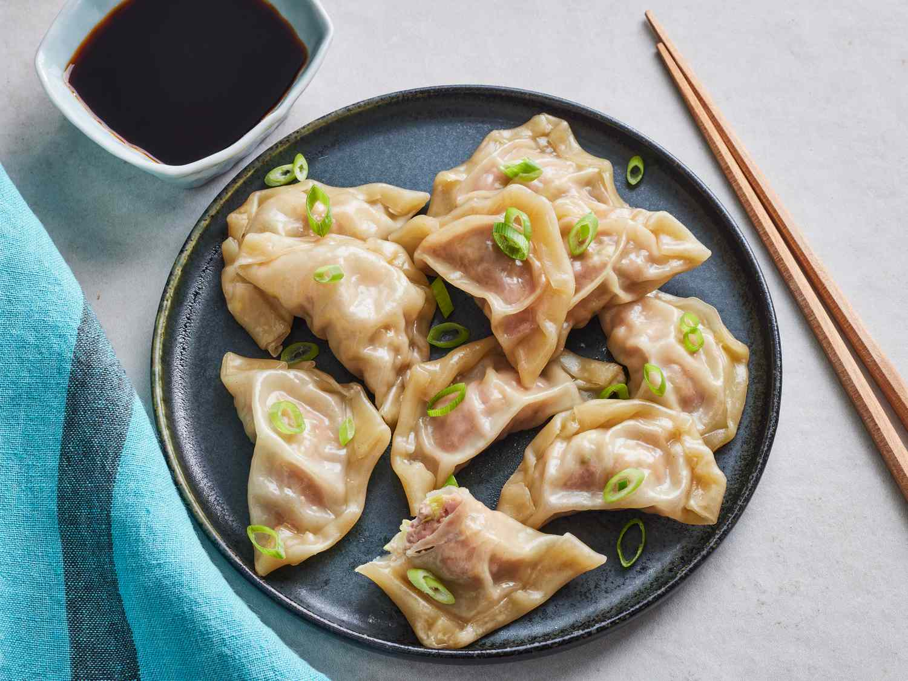

Pork Dumplings

Tender, Savory Pork Dumpings
These savory pork dumplings are bursting with meaty flavor!
Their tender wrappings yield to perfectly seasoned pork for a delicious bite.
Read on to learn how to make perfect pork dumplings!
Ingredients
- 100 Wonton Wrappers
- 2 Pounds Ground Pork
- 1 Tablespoon Minced Ginger
- 4 Cloves Minced Garlic
- 2 Tablespoons Sliced Green Onion
- 4 Tablespoons Soy Sauce
- 3 Tablespoons Sesame Oil
- 1 Egg Beaten
- 5 Cups Shredded Cabbage
Steps
- In a large bowl, combine the pork, ginger, garlic, green onion, soy sauce, sesame oil, egg and cabbage. Stir until well mixed.
- Place 1 heaping teaspoon of pork filling onto each wonton skin. Moisten edges with water and fold edges over to form a triangle shape. Roll edges slightly to seal in filling. Set dumplings aside on a lightly floured surface until ready to cook.
- Arrange dumplings in a covered bamboo or metal steamer so they don't touch to prevent them from sticking together; steam for 15 minutes, or until pork is cooked through.
- Serve hot and enjoy!